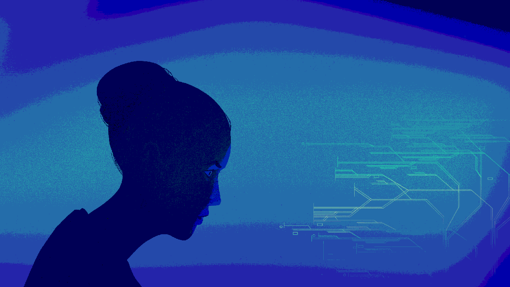

共 20 题，预计用时 3-5 分钟
生命性感知 (AP) — 反映你对数字生命是否具备“生命”属性的认知判断，得分越高表示越倾向于将数字生命视为真正的生命形态。
情感趋避 (AA) — 反映你对数字生命在情绪层面的亲近或排斥，得分越高表示情绪上越接纳、越少不安与威胁感。
意义感知 (PM) — 反映你对数字生命是否具有存在意义的判断，得分越高表示越认为数字生命是一种有意义的存在形式。
伦理接纳 (EA) — 反映你对数字生命技术伦理前景的态度，得分越高表示越倾向于认为其伦理风险可控、值得开放接纳。
数字生命态度量表（DLAS）基于认知-情绪-意义-伦理四维度框架设计（生命性感知、情感趋避、意义感知、伦理接纳），用于探索个体对数字生命概念的多层次态度。
本测评仅供自我探索与学术参考使用。
数字生命伦理 · 意识上传哲学 · AI 与人格权
更多内容即将上线，敬请期待。